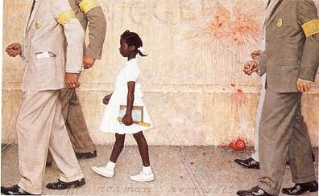

The Problem We All Live With
Norman Rockwell · 1964 · Oil on canvas · 36 × 58 in. · Norman Rockwell Museum, Stockbridge, Massachusetts
In copyright. Look and learn: shown for study, not for download.
This painting was first published as a centerfold in Look magazine on January 14, 1964. Rockwell had ended his contract with The Saturday Evening Post the year before, frustrated by the limits the magazine placed on political themes. His model was a local girl, Lynda Gunn. After it was published he received sacks of disapproving mail. In 2011 it hung in the White House, in a hallway outside the Oval Office, from July to October.